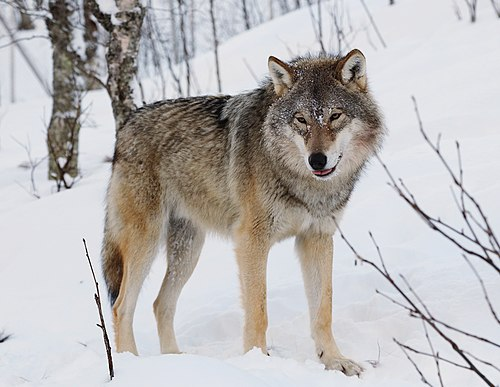

რა არის ველური ცხოველები?
ველური ცხოველები ცხოვრობენ ბუნებაში და არ არიან მოშინაურებული. ისინი ეკოლოგიური ბალანსის მნიშვნელოვანი ნაწილია.
მგელი სოციალური მტაცებელია, რომელიც ცხოვრობს ჯგუფებში, ე.წ. ყვირილებში.
მგელი ძაღლისებრთა ოჯახის (Canidae) ყველაზე დიდი წარმომადგენელია. აღნიშნული ოჯახი არის ერთ-ერთი მტაცებელთა (Carnivora) კლასის შემადგენელი შვიდი სახეობიდან. დღეისათვის მგლების ორი სახეობაა გავრცელებული: ე. წ. წითური მგელი (Canis rufus ) და რუხი მგელი (Canis lupus).

ველური ცხოველები ცხოვრობენ ბუნებაში და არ არიან მოშინაურებული. ისინი ეკოლოგიური ბალანსის მნიშვნელოვანი ნაწილია.